Tác phẩm cẩm nang huấn luyện chính thức được phát hành bởi USTA Player Development
Lời Tựa của Stan Smith
Stan Smith - Thành viên Đại sảnh Danh vọng Quần vợt Quốc tế, Phó Giám đốc Phát triển Vận động viên USTA
Cuốn sách "Huấn Luyện Quần Vợt Thành Công" (Coaching Tennis Successfully) là một tác phẩm mang tính chuẩn mực và toàn diện bậc nhất trong lĩnh vực đào tạo huấn luyện viên quần vợt, đặc biệt là trong môi trường đội tuyển và học đường. Tôi đã từng có đặc ân thi đấu cho các đội tuyển trung học, đại học và Đội tuyển Davis Cup Hoa Kỳ. Dù các huấn luyện viên của tôi thời đó đều là những người rất am hiểu chuyên môn, nhưng nếu họ có được khối lượng kiến thức sư phạm và phương pháp luận được hệ thống hóa trong cuốn sách này, họ chắc chắn đã có thể dẫn dắt chúng tôi đạt tới những đỉnh cao còn vượt trội hơn nữa.
Trải nghiệm được sinh hoạt và thi đấu trong một đội tuyển quần vợt, đặc biệt là ở lứa tuổi thanh thiếu niên, không chỉ đóng vai trò then chốt trong việc chuẩn bị cho vận động viên trẻ đối mặt với những thử thách khắc nghiệt trên sân đấu, mà còn rèn giũa bản lĩnh kiên cường cho cuộc sống sau này.
Tôi đặc biệt khuyến nghị cuốn sách này tới bất kỳ huấn luyện viên nào muốn nâng cao hiệu quả công tác giảng dạy, từ việc định hình triết lý huấn luyện chuẩn mực, xây dựng kế hoạch mùa giải khoa học, hoàn thiện kỹ thuật và chiến thuật trên sân, cho đến việc quản lý trận đấu và đánh giá hiệu suất của vận động viên. Những bài học, giai thoại thực tế và nghiên cứu khoa học thể thao được lồng ghép sinh động sẽ là kim chỉ nam giúp bạn trở thành người thầy xuất sắc nhất có thể.
Lời Mở Đầu & Giới Thiệu từ Hiệp Hội Quần Vợt Hoa Kỳ (USTA)
Hiệp hội Quần vợt Hoa Kỳ (USTA)
Hiệp hội Quần vợt Hoa Kỳ (USTA) là cơ quan quản lý và phát triển môn thể thao quần vợt tại Mỹ, đồng thời là đơn vị sở hữu và vận hành Giải Vô địch Quần vợt Mỹ Mở rộng (US Open). Nguồn lực từ giải đấu này được tái đầu tư mạnh mẽ vào việc phổ biến và phát triển phong trào quần vợt ở mọi cấp độ. Trong số hơn nửa triệu thành viên của chúng tôi, có một lực lượng đông đảo các huấn luyện viên học đường, các vận động viên trẻ và phụ huynh đầy nhiệt huyết.
Cuốn sách này được biên soạn với mục tiêu tối thượng: Cung cấp cho các huấn luyện viên một cẩm nang sư phạm hoàn chỉnh, hiện đại và chuẩn xác nhất. Được chấp bút bởi Tiến sĩ Ron Woods - Giám đốc Bộ phận Phát triển Vận động viên của USTA, cùng với sự cộng tác của các chuyên gia khoa học thể thao hàng đầu như Paul Roetert, Lew Brewer, Lynne Rolley, Nick Saviano và Tom Gullikson, tác phẩm này kết hợp nhuần nhuyễn giữa lý thuyết khoa học vận động và thực tiễn huấn luyện đỉnh cao. Cho dù bạn là giáo viên thể chất kiêm nhiệm, một huấn luyện viên chuyên nghiệp hay một người đam mê quần vợt tình nguyện dẫn dắt đội tuyển trường học, cuốn sách này sẽ trang bị cho bạn tất cả các công cụ cần thiết để xây dựng một chương trình quần vợt thành công, nhân văn và trường tồn.
PHẦN I: NỀN TẢNG HUẤN LUYỆN (COACHING FOUNDATION)
Chương 1: Xây Dựng Triết Lý Huấn Luyện Quần Vợt
Developing a Tennis Coaching Philosophy
Hành Trình Định Hình Bản Sắc Của Người Huấn Luyện
Tôi vẫn nhớ như in buổi chiều mùa thu năm 1969 khi đang lái xe một mình trên con đường vắng, suy ngẫm về lời đề nghị của vị giám đốc thể thao trường trung học vào đầu ngày hôm đó: "Thầy có muốn đảm nhận vị trí huấn luyện viên đội tuyển quần vợt nam và nữ vào mùa xuân tới không?". Là một giáo viên mới bước sang năm thứ hai còn đang bỡ ngỡ với giáo án đứng lớp, việc gánh thêm trọng trách dẫn dắt cả một đội tuyển thể thao sau giờ học không phải là điều dễ dàng tiếp nhận. Tuy nhiên, sau khi cân nhắc kỹ lưỡng, tôi đã quyết định dấn thân. Thời gian đã chứng minh rằng đó là quyết định đúng đắn nhất trong cuộc đời tôi.
Trong suốt hơn một phần tư thế kỷ làm công tác huấn luyện, tôi đã gặt hái được những trải nghiệm vô cùng phong phú và ý nghĩa mà không một nghề nghiệp nào khác có thể mang lại. Huấn luyện viên là người có cơ hội đặc biệt để tác động trực tiếp, sâu sắc và lâu dài đến nhân cách, sự tự tin và tương lai của những người trẻ tuổi. Nhưng để hoàn thành sứ mệnh đó, điều đầu tiên bạn phải xây dựng không phải là những bài tập chiến thuật phức tạp, mà chính là một triết lý huấn luyện vững vàng và nhất quán.
Thấu Hiểu Bản Thân: Nền Tảng Của Mọi Phong Cách Huấn Luyện
Để trở thành một nhà sư phạm thể thao thành công, bạn phải hiểu rõ chính mình. Tại sao bạn lại chọn làm huấn luyện viên? Mục tiêu ưu tiên của bạn là gì? Bạn muốn được nhớ đến như một người chỉ biết săn lùng cúp chiến thắng bằng mọi giá, hay như một người thầy đã khai sáng tiềm năng và chắp cánh cho những ước mơ của học trò?
Có ba mục tiêu cơ bản mà hầu hết các huấn luyện viên đều theo đuổi:
1. Giúp vận động viên phát triển toàn diện về thể chất, tâm lý và xã hội.
2. Tạo ra niềm vui và sự hứng khởi trong quá trình tập luyện và thi đấu.
3. Giành chiến thắng trong các cuộc tranh tài.
Một triết lý huấn luyện lành mạnh đòi hỏi bạn phải đặt ra thứ tự ưu tiên rõ ràng: "Vận Động Viên Là Số Một, Chiến Thắng Là Số Hai" (Athletes First, Winning Second). Khi bạn đặt sự phát triển lâu dài và sức khỏe thể chất, tinh thần của vận động viên lên trên kết quả trước mắt của một trận đấu, bạn sẽ không bao giờ đẩy học trò vào tình thế kiệt sức, chấn thương hay gian lận để giành lấy điểm số. Điều kỳ diệu là, khi các vận động viên cảm nhận được sự tôn trọng và môi trường an toàn từ bạn, họ sẽ tự nhiên thi đấu với sự tự tin cao nhất, và những chiến thắng sẽ tự khắc đến như một hệ quả tất yếu.
Lãnh Đạo Học Đường và Huấn Luyện Viên Kiêm Nhiệm
Nhiều huấn luyện viên quần vợt học đường không phải là giáo viên toàn thời gian trong trường. Họ có thể là các huấn luyện viên chuyên nghiệp tại các câu lạc bộ địa phương, hoặc những người yêu quần vợt được mời về phụ trách đội bóng. Dù ở cương vị nào, bạn cũng phải luôn ghi nhớ "bức tranh tổng thể": Thể thao học đường là một phần của hệ sinh thái giáo dục.
Bạn cần chủ động làm quen và phối hợp chặt chẽ với ban giám hiệu, đội ngũ giáo viên bộ môn và nhân viên y tế của trường. Hãy hiểu rõ các quy chế học tập, chính sách kỷ luật và tiêu chuẩn hạnh kiểm dành cho học sinh. Khi các học trò thấy bạn đặt việc học tập và đạo đức lên hàng đầu, họ sẽ học được tính kỷ luật và sự tôn trọng đối với màu cờ sắc áo của nhà trường.
Chương 2: Truyền Đạt Cách Tiếp Cận Của Bạn
Communicating Your Approach
Giao Tiếp: Trọng Tâm Của Nghệ Thuật Sư Phạm Thể Thao
Điều gì tạo nên sự khác biệt giữa một huấn luyện viên xuất sắc, một huấn luyện viên trung bình và một huấn luyện viên tồi? Kiến thức chuyên môn và trải nghiệm thi đấu thời đỉnh cao dĩ nhiên rất quan trọng, nhưng nếu đó là yếu tố quyết định duy nhất thì tại sao rất nhiều cựu ngôi sao quần vợt lẫy lừng lại thất bại thảm hại khi bước sang nghiệp huấn luyện?
Câu trả lời nằm ở kỹ năng giao tiếp. Bạn có thể sở hữu kho kiến thức kỹ thuật đồ sộ nhất thế giới, nhưng nếu bạn không thể truyền đạt được những ý tưởng đó vào đầu và trái tim của học trò, thì khối tài sản chuyên môn ấy hoàn toàn vô nghĩa. Giao tiếp hiệu quả không đơn thuần là việc nói ra những mệnh lệnh, mà là một chu trình tương tác hai chiều phức tạp gồm: Gửi thông điệp, tiếp nhận thông điệp, thấu cảm, phản hồi và điều chỉnh hành vi.
Sức Mạnh Của Giao Tiếp Phi Ngôn Ngữ (Nonverbal Communication)
Các nghiên cứu khoa học hành vi chỉ ra rằng trong huấn luyện thể thao, hơn 70% thông điệp được truyền tải qua các kênh phi ngôn ngữ: Ánh mắt, nét mặt, tư thế đứng, giọng điệu, nhịp thở và khoảng cách không gian.
Khi một tay vợt trẻ phạm lỗi giao bóng kép ở thời điểm then chốt, bạn có thể không nói lời nào nhưng nếu bạn khoanh tay trước ngực, lắc đầu ngao ngán và quay mặt đi chỗ khác, bạn vừa gửi đi một thông điệp tàn nhẫn rằng: "Thầy hoàn toàn thất vọng về em". Ngược lại, một cái gật đầu kiên định, một ánh mắt khích lệ và ngón tay cái giơ lên sẽ tiếp thêm cho vận động viên nguồn năng lượng mạnh mẽ để vượt qua cơn hoảng loạn tâm lý. Hãy luôn ý thức về từng cử chỉ và ngôn ngữ cơ thể của bạn trên sân đấu.
Phản Hồi Xây Dựng Thay Vì Chỉ Trích Tiêu Cực (The Feedback Sandwich)
Để sửa lỗi kỹ thuật hoặc chiến thuật cho vận động viên, hãy áp dụng nguyên tắc "Bánh Mì Kẹp Phản Hồi" (Feedback Sandwich):
1. Lớp bánh đầu tiên: Bắt đầu bằng một lời khen ngợi chân thành và ghi nhận nỗ lực tích cực của vận động viên.
2. Phần nhân ở giữa: Đưa ra nhận xét cụ thể, rõ ràng về lỗi sai kỹ thuật và chỉ dẫn hành động điều chỉnh chính xác (không chỉ trích nhân cách, không dùng từ ngữ xúc phạm).
3. Lớp bánh kết thúc: Khép lại bằng một lời động viên nhiệt thành, củng cố niềm tin vào khả năng làm chủ động tác của học trò.
Ví dụ: "Em di chuyển vào bóng rất nhanh và quyết đoán (Khen ngợi). Tuy nhiên, ở điểm tiếp xúc, mặt vợt của em đang mở hơi quá rộng khiến bóng bay vượt qua vạch cuối sân; hãy thử giữ cổ tay vững và khép nhẹ mặt vợt khi quét qua bóng (Chỉ dẫn kỹ thuật). Cú đánh trước đó em đã thực hiện góc quét rất đẹp, thầy tin em sẽ chỉnh được ngay ở quả tiếp theo (Khích lệ).".
Làm Việc Cùng Phụ Huynh, Nhà Trường Và Giới Truyền Thông
Kỹ năng giao tiếp của bạn không chỉ giới hạn ở các buổi tập với học trò, mà còn quyết định sự thành bại trong việc quản lý môi trường xung quanh. Hãy tổ chức một buổi gặp mặt phụ huynh vào đầu mỗi mùa giải để giải thích rõ ràng triết lý thi đấu, nội quy đội tuyển, tiêu chuẩn chọn lựa đội hình chính thức và các kỳ vọng về văn hóa ứng xử trên khán đài.
Đối với nhà trường và truyền thông địa phương, hãy luôn là một đại sứ mẫu mực. Cung cấp thông tin kịp thời, công bằng, luôn tôn vinh tinh thần đồng đội và nỗ lực của các vận động viên thay vì chỉ tập trung vào những cá nhân ghi điểm xuất sắc.
Chương 3: Truyền Cảm Hứng & Động Lực Cho Vận Động Viên
Motivating Players
Động Lực Nội Tại vs Động Lực Bên Ngoài
Động lực là nguồn nhiên liệu thúc đẩy vận động viên kiên trì vượt qua hàng ngàn giờ tập luyện gian khổ dưới trời nắng gắt hay giá lạnh. Huấn luyện viên cần phân biệt rõ giữa hai dạng động lực:
- Động lực bên ngoài (Extrinsic motivation): Xuất phát từ phần thưởng vật chất, điểm số, cúp vô địch, tiền thưởng hoặc sự tán dương của người khác. Dù có tác dụng kích thích ngắn hạn, động lực bên ngoài rất dễ dẫn đến sự phụ thuộc, sợ hãi thất bại và kiệt sức tâm lý khi không đạt được kết quả như ý.
- Động lực nội tại (Intrinsic motivation): Bắt nguồn từ tình yêu thuần khiết với môn quần vợt, niềm vui thích khi làm chủ một cú đánh khó, cảm giác phấn khích khi được vượt lên chính mình và tinh thần gắn kết với đồng đội. Đây là nguồn động lực vô tận, bền vững và lành mạnh nhất.
Sứ mệnh của bạn là thiết kế môi trường tập luyện sao cho các vận động viên luôn tìm thấy niềm vui trong sự tiến bộ hàng ngày, thay vì chỉ bị ám ảnh bởi việc phải thắng bằng mọi giá.
Lý Thuyết Thiết Lập Mục Tiêu: Cầu Nối Của Sự Hoàn Thiện
Mục tiêu không rõ ràng sẽ dẫn tới hành động phân tán và tâm lý bất an. Để giúp học trò đạt tới trạng thái đỉnh cao, huấn luyện viên cần hướng dẫn họ phân biệt và thiết lập ba nhóm mục tiêu:
1. Mục tiêu Kết Quả (Outcome Goals): Ví dụ: Thắng trận bán kết, lọt vào top 10 quốc gia, đoạt cúp vô địch giải học khu. Những mục tiêu này chỉ phụ thuộc một phần vào bản thân vận động viên, vì đối thủ có thể chơi một trận đấu xuất thần ngoài tầm kiểm soát. Nếu chỉ chăm chăm vào mục tiêu kết quả, vận động viên sẽ phải gánh chịu mức độ lo âu tột độ.
2. Mục tiêu Hiệu Suất (Performance Goals): Ví dụ: Nâng tỷ lệ giao bóng một vào sân lên 65%, thực hiện ít hơn 15 lỗi tự đánh hỏng trong một set đấu, tăng vận tốc quả giao bóng thêm 5 km/h. Những mục tiêu này có thể đo lường cụ thể và hoàn toàn do vận động viên kiểm soát.
3. Mục tiêu Quy Trình (Process Goals): Ví dụ: Thực hiện động tác split-step nhịp nhàng trước mỗi cú đánh của đối thủ, duy trì mắt nhìn vào bóng cho tới khi bóng rời mặt vợt, tuân thủ thói quen hít thở sâu 5 giây giữa các điểm số.
Quy tắc vàng trong huấn luyện là: Tập trung 90% tâm trí vào Mục Tiêu Quy Trình và Mục Tiêu Hiệu Suất. Khi quy trình chuẩn xác và hiệu suất được cải thiện, kết quả thắng lợi sẽ tự khắc tới.
Mục Tiêu Dài Hạn, Trung Hạn Và Mục Tiêu Tức Thì ('Now' Goals)
Một vận động viên có ước mơ dài hạn là trở thành tay vợt số 1 của trường (Long-term goal). Để biến giấc mơ đó thành hiện thực, họ cần những mục tiêu trung hạn (Intermediate goals) theo từng tháng, ví dụ như hoàn thiện kỹ thuật giao bóng xoáy cống (kick serve) và xây dựng nền tảng thể lực bền bỉ.
Tuy nhiên, yếu tố quyết định sự bứt phá hàng ngày chính là "Mục tiêu Tức thì" (Now goals). Mỗi khi bước vào sân tập 2 tiếng, vận động viên phải biết rõ ngày hôm nay mình tập trung vào điều gì: "Trong buổi tập hôm nay, mình sẽ không đánh bóng hỏng quả thứ ba trong loạt bóng bền", hoặc "Mình sẽ tập trung tiếp xúc bóng phía trước thân người trên mọi cú trái tay". Khi đạt được những mục tiêu vi mô này mỗi ngày, sự tự tin của vận động viên sẽ tăng lên theo cấp số nhân.
Chế Ngự Nỗi Sợ Hãi Thất Bại Và Hội Chứng Cháy Sạch (Burnout)
Nỗi sợ thất bại là kẻ thù số một bóp nghẹt tài năng của các tay vợt trẻ. Nỗi sợ này bắt nguồn từ sự đánh đồng sai lầm giữa kết quả trận đấu và giá trị con người của chính họ: "Nếu tôi thua trận này, tôi là một kẻ vô dụng".
Huấn luyện viên phải thường xuyên giáo dục học trò rằng thất bại không phải là dấu chấm hết, mà là nguồn dữ liệu quý giá nhất để học hỏi và hoàn thiện. Hãy tôn vinh lòng dũng cảm khi học trò dám tung ra cú đánh quyết đoán ở thời điểm áp lực, ngay cả khi bóng đi ra ngoài mép dây vài centimet, hơn là việc họ rụt rè đẩy bóng sang sân chỉ để chờ đối thủ tự đánh hỏng. Bằng cách định nghĩa lại ý nghĩa của thành công, bạn sẽ giải phóng tâm lý cho vận động viên và ngăn ngừa hội chứng kiệt sức (burnout).
Chương 4: Xây Dựng Một Đội Tuyển & Chương Trình Quần Vợt Thành Công
Building a Tennis Program
Xây Dựng Bản Sắc Văn Hóa Và Bộ Quy Tắc Đội Tuyển
Một chương trình quần vợt thành công không được xây dựng dựa trên sự ngẫu hứng của một thế hệ tài năng cá biệt, mà dựa trên nền tảng văn hóa đội tuyển vững chắc được kế thừa qua nhiều năm. Bản sắc đó được kết tinh từ tinh thần kỷ luật, sự tận hiến, lòng tự hào về truyền thống và tinh thần trách nhiệm lẫn nhau.
Mỗi huấn luyện viên cần ban hành một cuốn cẩm nang nội quy đội tuyển (Team Handbook) ngay từ đầu mùa, quy định rõ ràng về:
- Thời gian tập luyện và quy định có mặt đúng giờ (Đúng giờ nghĩa là có mặt trước 10 phút, sẵn sàng với trang phục và vợt đã căng).
- Yêu cầu học tập và tiêu chuẩn điểm số tối thiểu để duy trì tư cách thi đấu.
- Văn hóa ứng xử trên sân, bao gồm việc tuân thủ tuyệt đối quy tắc tự bắt bóng trung thực (The Code), không ném vợt, không chửi thề và luôn bắt tay trọng tài cùng đối thủ với sự tôn trọng chân thành sau trận đấu.
- Trách nhiệm của các thành viên trong việc bảo quản sân bãi, thu dọn bóng và hỗ trợ các đồng đội đang thi đấu.
Tổ Chức Tuyển Chọn Đội Hình (Tryouts) Và Xếp Hạng Công Bằng
Quy trình tuyển chọn đội hình và phân bổ các vị trí đánh đơn (Singles 1, 2, 3) và đánh đôi (Doubles 1, 2, 3) là một trong những khía cạnh nhạy cảm nhất đối với tâm lý học sinh và phụ huynh. Sự minh bạch và công bằng tuyệt đối là nguyên tắc bất di bất dịch.
Hãy thiết lập một hệ thống thi đấu thách đấu (Challenge Matches) rõ ràng:
- Tổ chức giải phân hạng nội bộ theo thể thức vòng tròn tính điểm hoặc đấu loại kép trước khi bước vào mùa giải chính thức.
- Quy định các trận thách đấu giữa các vị trí liền kề phải diễn ra với sự chứng kiến của huấn luyện viên hoặc trợ lý.
- Tuy nhiên, huấn luyện viên cần giữ quyền quyết định cuối cùng đối với đội hình đánh đôi dựa trên sự tương thích về phong cách thi đấu, cá tính và kỹ năng phối hợp trên lưới của hai vận động viên, chứ không chỉ đơn thuần ghép hai tay vợt đánh đơn giỏi nhất lại với nhau.
Phát Huy Vai Trò Của Đội Trưởng Và Cán Sự Đội Tuyển
Đội trưởng không chỉ là người tung đồng xu chọn sân trước trận đấu, mà là cánh tay nối dài của huấn luyện viên. Hãy bầu chọn hoặc chỉ định đội trưởng dựa trên phẩm chất đạo đức, tinh thần gương mẫu và khả năng lắng nghe, thấu hiểu đồng đội, chứ không chỉ dựa trên thành tích cá nhân.
Trao quyền cho ban cán sự đội tuyển phụ trách việc tổ chức khởi động tập thể, quản lý dụng cụ thi đấu và duy trì sự đoàn kết nội bộ. Khi các vận động viên cảm thấy mình có tiếng nói và vai trò làm chủ đội bóng, họ sẽ chiến đấu bằng 200% tinh thần trách nhiệm.
PHẦN II: KẾ HOẠCH HUẤN LUYỆN (COACHING PLANS)
Chương 5: Lập Kế Hoạch Cho Mùa Giải
Planning for the Season
Những Trách Nhiệm Hành Chính Thiết Yếu Trước Mùa Giải
Niềm vui sướng lớn nhất của một huấn luyện viên là được đứng trên sân theo dõi học trò thực hiện chuẩn xác những kỹ năng mà họ đã được truyền dạy. Những công việc hành chính giấy tờ như thu thập phiếu đăng ký, giấy khám sức khỏe và cam kết phụ huynh thoạt nhìn có vẻ tẻ nhạt, nhưng một huấn luyện viên dày dạn kinh nghiệm luôn hiểu rằng sự chuẩn bị chu đáo trước mùa giải chính là chìa khóa quyết định sự trơn tru của toàn bộ giải đấu.
Trước khi bước vào buổi tập đầu tiên, bạn cần hoàn tất các hạng mục sau:
- Kiểm tra y tế, bảo hiểm và tư cách thi đấu hợp lệ của từng học sinh theo quy định của liên đoàn thể thao học đường.
- Thiết lập lịch thi đấu giao hữu và chính thức, cân bằng giữa các đối thủ vừa tầm để tạo sự tự tin và các đối thủ mạnh để cọ xát bản lĩnh.
- Dự trù kinh phí, mua sắm bóng tập chất lượng cao, đồng phục thi đấu, túi cứu thương và kiểm tra an toàn mặt sân, lưới, dây chằng.
- Xây dựng bản kế hoạch mùa giải tổng thể (Master Season Plan) và chia sẻ với ban giám hiệu, vận động viên và gia đình.
Giai Đoạn Hóa Mùa Giải (Periodization)
Một mùa giải quần vợt học đường thường kéo dài từ 12 đến 16 tuần. Để các vận động viên đạt điểm rơi phong độ cao nhất vào giai đoạn tranh chức vô địch, huấn luyện viên cần phân chia mùa giải thành ba chu kỳ rõ rệt:
1. Giai đoạn tiền mùa giải (Preseason - 4 đến 5 tuần đầu): Trọng tâm là củng cố nền tảng thể lực, hoàn thiện cơ chế động học của các cú đánh, kiểm tra trình độ nội bộ và định hình đội hình thi đấu.
2. Giai đoạn thi đấu chính thức (Competitive Season - 6 đến 8 tuần giữa): Chuyển trọng tâm sang chiến thuật cá nhân và đồng đội, mô phỏng các tình huống thi đấu thực tế, rèn luyện tâm lý vững vàng dưới áp lực và duy trì phong độ thể lực.
3. Giai đoạn giải vô địch (Championship Season - 2 đến 3 tuần cuối): Giảm khối lượng tập luyện (tapering) để cơ bắp phục hồi hoàn toàn, tập trung tinh chỉnh các bài tập ngắn với cường độ cao, mài sắc vũ khí sở trường và chuẩn bị chiến lược cụ thể cho từng đối thủ.
Chương Trình Huấn Luyện Thể Lực Chuyên Biệt Cho Quần Vợt
Quần vợt hiện đại đòi hỏi sự kết hợp phức tạp giữa sức bền hiếu khí (aerobic endurance) để duy trì thể lực trong các trận đấu kéo dài nhiều giờ, và sức mạnh bùng nổ yếm khí (anaerobic power) cho hàng trăm pha bứt tốc ngắn từ 3 đến 5 mét.
Một chương trình rèn luyện thể lực hiệu quả bao gồm:
- Rèn luyện sức mạnh cốt lõi (Core stability): Cơ bụng, cơ lưng dưới và hông là trạm trung chuyển năng lượng quan trọng nhất của mọi cú đánh.
- Tập luyện xoay vòng (Circuit training): Kết hợp các bài tập chống đẩy, gập bụng, nhảy dây, squat bật nhảy và chạy con thoi (suicide runs) qua các vạch sân. Vận động viên di chuyển liên tục giữa các trạm để phát triển đồng thời sức mạnh và sức chịu đựng tim mạch.
- Độ linh hoạt và linh hoạt khớp (Flexibility & Mobility): Thực hiện giãn cơ động trước buổi tập để làm nóng các nhóm cơ vai, háng, gân kheo; và giãn cơ tĩnh sau buổi tập để tái tạo mô cơ và ngăn ngừa chấn thương.
Chương 6: Lập Kế Hoạch Cho Các Buổi Tập
Planning Practices
Hệ Thống Giáo Án 3 Tầng: Từ Tổng Thể Đến Từng Phút Trên Sân
Thời gian tập luyện trên sân luôn có hạn, trong khi số lượng học sinh thường đông đảo. Việc bước ra sân mà không có một kế hoạch cụ thể sẽ biến buổi tập thành một buổi đánh bóng tự do hỗn loạn, khiến các vận động viên nhanh chóng chán nản và hình thành các thói quen xấu.
Một huấn luyện viên chuyên nghiệp luôn vận hành dựa trên hệ thống giáo án 3 tầng:
1. Kế hoạch tổng thể (Master Practice Plan): Khung chương trình cả năm, phân bổ tỷ trọng thời gian cho kỹ thuật, chiến thuật, thể lực và tâm lý.
2. Kế hoạch tuần (Weekly Plan): Xác định mục tiêu cụ thể cho từng tuần lễ dựa trên kết quả thi đấu của tuần trước đó (Ví dụ: Tuần này tập trung khắc phục lỗi trả giao bóng và chiến thuật đôi).
3. Giáo án ngày chi tiết (Daily Practice Schedule): Bảng phân công từng phút, quy định rõ từng cụm sân, người đứng sân và bài tập chi tiết.
Cấu Trúc Chuẩn Của Buổi Tập Quần Vợt 2 Giờ (120 Phút)
Một buổi tập 120 phút đạt hiệu suất tối ưu được phân bổ khoa học theo cấu trúc 5 giai đoạn:
1. Khởi động và kích hoạt cơ học (15 phút): 5 phút chạy nhẹ làm ấm cơ thể kết hợp các bài tập bước di chuyển (bước trượt ngang, Bước chân bắt chéo (crossover step) carioca), theo sau là 10 phút giãn cơ động và bài tập bóng ngắn (short court rally) để tìm cảm giác bóng mượt mà.
2. Huấn luyện kỹ thuật và cơ sinh học (30 phút): Tập trung vào một chủ đề kỹ thuật duy nhất trong ngày (Ví dụ: Cú cắt bóng trái tay tiếp cận lưới, hoặc kỹ thuật bật chân phát lực giao bóng). Sử dụng hình thức tiếp bóng bằng tay (hand-feeding) hoặc bóng tung có kiểm soát để học trò hoàn thiện quỹ đạo vung vợt.
3. Huấn luyện chiến thuật và bài tập tình huống (35 phút): Đưa kỹ thuật vừa học vào các kịch bản thi đấu bán tự do, ép người chơi phải đưa ra quyết định nhanh chóng dưới áp lực góc sân và vị trí của đối thủ.
4. Thi đấu đối kháng có điều kiện (30 phút): Đấu tập các set đấu có áp điểm chấp, loạt tie-break áp lực cao (bắt đầu từ tỷ số 4-4 hoặc 30-30), hoặc thi đấu đôi với luật cấm lùi sau vạch giao bóng.
5. Thả lỏng, đánh giá và gắn kết đội tuyển (10 phút): Chạy bộ nhẹ, giãn cơ tĩnh toàn thân, huấn luyện viên nhận xét ngắn gọn về những điểm tiến bộ trong ngày và nêu bật mục tiêu cho buổi tập kế tiếp.
Nghệ Thuật Quản Lý Sân Bãi Cho Đội Tuyển Đông Người
Thách thức lớn nhất của các huấn luyện viên học đường là phải hướng dẫn 12 đến 20 vận động viên trên 4 sân bóng. Nếu để 16 học sinh đứng xếp hàng chờ đánh một quả bóng, họ sẽ mất tập trung và nguội cơ bắp.
Giải pháp tối ưu là vận hành theo mô hình Trạm Xoay Vòng (Station Rotation):
- Sân 1: Trạm kỹ thuật chuyên sâu do huấn luyện viên trưởng trực tiếp nạp bóng và chỉnh sửa động tác (Nhóm 4 người).
- Sân 2: Trạm thi đấu điểm đối kháng có điều kiện do trợ lý hoặc đội trưởng giám sát (Nhóm 4 người).
- Sân 3: Trạm bài tập bóng bền duy trì mục tiêu (Ví dụ: Đánh chéo sân sâu qua 6 chiếc nón mục tiêu) giữa các học viên (Nhóm 4 người).
- Sân 4: Trạm rèn luyện giao bóng và trả giao bóng có đo lường thống kê (Nhóm 4 người).
Sau mỗi 20 hoặc 25 phút, các nhóm sẽ đồng loạt xoay chuyển trạm. Phương pháp này đảm bảo 100% vận động viên đều được vận động liên tục với cường độ cao và nhận được sự hướng dẫn trực tiếp từ huấn luyện viên.
PHẦN III: KỸ NĂNG VÀ CHIẾN THUẬT (COACHING TENNIS SKILLS & STRATEGY)
Chương 7: Cơ Học Cú Đánh & Phát Lực (Stroke Production)
Stroke Production and Biomechanics
Chuỗi động học liên hoàn Học (The Kinetic Chain) Trong Quần Vợt Hiện Đại
Mục tiêu cốt lõi của việc dạy kỹ thuật là trang bị cho mỗi vận động viên một nền tảng cơ học vững chắc và an toàn, giúp tạo ra lực đánh tối đa với mức tiêu hao năng lượng tối thiểu và loại trừ hoàn toàn nguy cơ chấn thương.
Sức mạnh của một cú đánh đỉnh cao không sinh ra từ cánh tay hay bắp tay, mà được tạo ra thông qua "Chuỗi động học liên hoàn Học" (Kinetic Chain). Năng lượng bắt đầu từ mặt đất: Lực phản hồi mặt đất truyền qua bàn chân, được khuếch đại bởi sự gập duỗi của khớp gối, truyền lên hông, xoay thân người trên (torso rotation), truyền qua khớp vai, cánh tay trên, cẳng tay, khớp cổ tay và cuối cùng phóng thích ra đầu vợt ngay tại khoảnh khắc tiếp xúc bóng. Nếu một mắt xích trong chuỗi này bị đứt đoạn (chẳng hạn như không nhún chân hoặc cổ tay lỏng lẻo), lực đánh sẽ suy giảm nghiêm trọng và cánh tay sẽ phải gồng cứng để bù đắp, dẫn đến viêm gân khuỷu tay (tennis elbow).
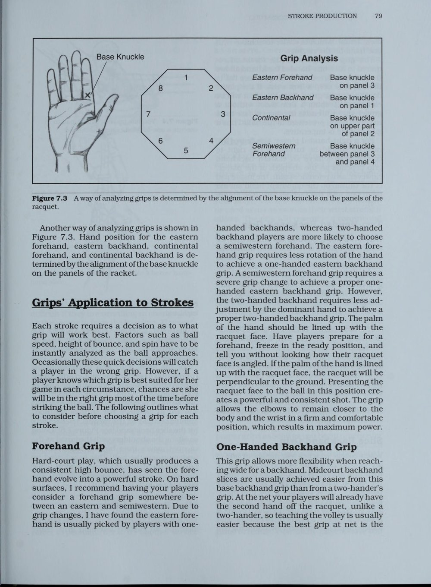
Hình 7.3: Hệ thống xác định vị trí khớp gốc ngón trỏ trên 8 mặt vát của cán vợt theo chuẩn USTA
Hệ Thống Các Kiểu Cầm Vợt Và Căn Chỉnh Khớp Ngón Tay (Grip Alignment)
Để dạy cách cầm vợt chuẩn xác, huấn luyện viên cần hướng dẫn học trò nhìn vào cán vợt hình bát giác gồm 8 mặt vát (bevels), với mặt phẳng đỉnh là mặt 1 và đếm theo chiều kim đồng hồ đối với người thuận tay phải:
- Cầm vợt số 2 (Continental Grip - Khớp ngón trỏ đặt trên mặt vát 2): Đây là kiểu cầm vợt bắt buộc cho cú giao bóng, cú vô-lê, đập bóng trên không (overhead) và cú cắt bóng (slice). Kiểu cầm này cho phép khớp cổ tay gập duỗi và phát lực xoay úp (pronation) hoàn toàn tự nhiên.
- Cầm vợt số 3 (Eastern Forehand Grip - Khớp ngón trỏ trên mặt vát 3): Kiểu cầm "bắt tay" truyền thống, tạo điểm tiếp xúc lý tưởng ngang hông, rất vững chãi để đánh bóng phẳng và bóng xoáy nhẹ.
- Cầm vợt số 4 (Semi-Western Forehand Grip - Khớp ngón trỏ trên mặt vát 4): Kiểu cầm phổ biến nhất trong quần vợt hiện đại, cho phép người chơi đánh bóng ở tầm cao ngang ngực với độ xoáy cuộn (topspin) cực lớn và quỹ đạo bóng vồng an toàn qua lưới.
- Cú trái một tay (One-handed Eastern Backhand - Khớp ngón trỏ trên mặt vát 1): Ngón cái tỳ chéo qua mặt sau cán vợt để tạo điểm tựa vững chắc chống lại lực va đập của bóng.
- Cú trái hai tay (Two-handed Backhand): Tay thuận cầm kiểu Continental hoặc Eastern số 2 ở dưới cùng cán vợt; tay không thuận đặt ngay sát phía trên, cầm kiểu Eastern Forehand số 7 (tương đương tay phải đánh bóng thuận tay). Tay không thuận đóng vai trò cánh tay phát lực chính, trong khi tay thuận đóng vai trò định hướng và giữ thăng bằng.
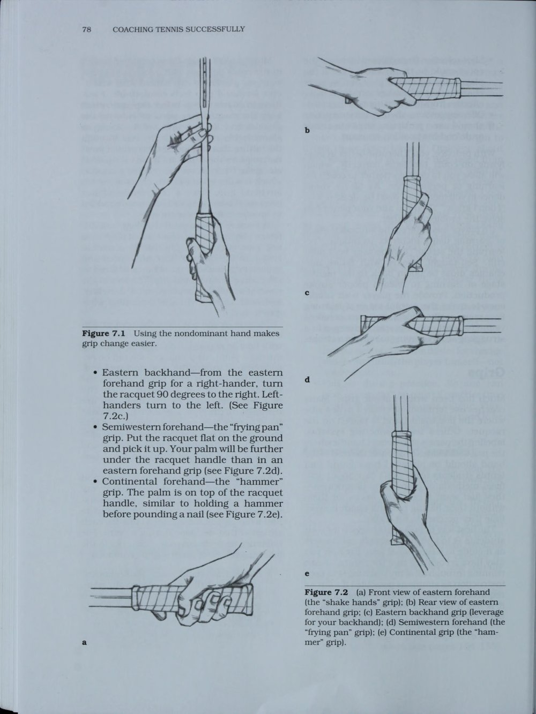
Hình 7.2: Mặt trước và mặt sau của các kiểu cầm vợt Eastern Forehand và Continental
Tư Thế Sẵn Sàng, Bước Tách Nhịp Và Các Loại Bộ Chân (Stances)
Mọi cú đánh xuất sắc đều bắt đầu từ một tư thế chuẩn bị hoàn hảo:
- Tư thế sẵn sàng (Ready Position): Hai chân mở rộng hơn vai một chút, đầu gối hơi khuỵu, trọng lượng cơ thể dồn vào nửa trước bàn chân, lưng giữ thẳng nghiêng nhẹ về phía trước, hai tay ôm giữ vợt phía trước ngực với đầu vợt hướng lên trên.
- Bước tách nhịp (Split-step): Đây là động tác bật nhảy nhẹ tại chỗ của cả hai chân ngay khoảnh khắc đối thủ chạm bóng. Bước tách nhịp đưa cơ thể vào trạng thái "nạp lò xo" trung hòa, giúp các thụ thể thần kinh cơ phản xạ lập tức theo bất kỳ hướng di chuyển nào của trái bóng.
- Bộ chân vuông góc (Square Stance): Bàn chân trước bước thẳng về phía lưới theo hướng đánh, dồn trọng lượng từ chân sau sang chân trước. Rất phù hợp cho các pha bóng ngắn tiếp cận sân và dứt điểm dọc dây.
- Bộ chân mở (Open Stance): Hai bàn chân mở rộng song song với lưới. Năng lượng được nạp bằng cách hạ thấp chân ngoài cùng, sau đó xoay bùng nổ khớp hông và thân trên để quét qua bóng. Bộ chân mở là vũ khí sống còn trong các pha bóng bền tốc độ cao cuối sân vì nó giúp người chơi giữ vững thăng bằng và phục hồi vị trí nhanh hơn 0.5 giây so với bộ chân truyền thống.
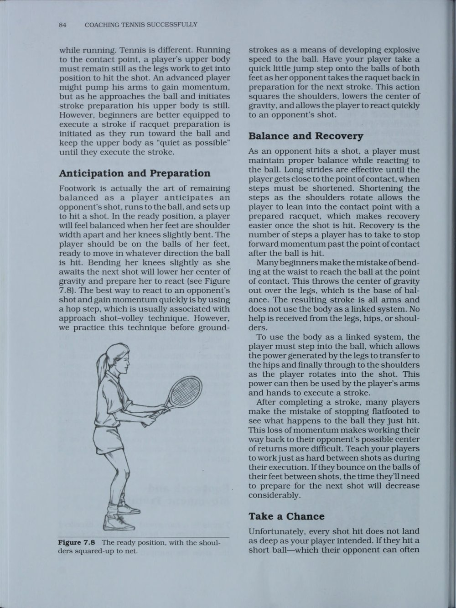
Hình 7.8: Tư thế sẵn sàng chuẩn mực (Ready Position) và hạ thấp trọng tâm
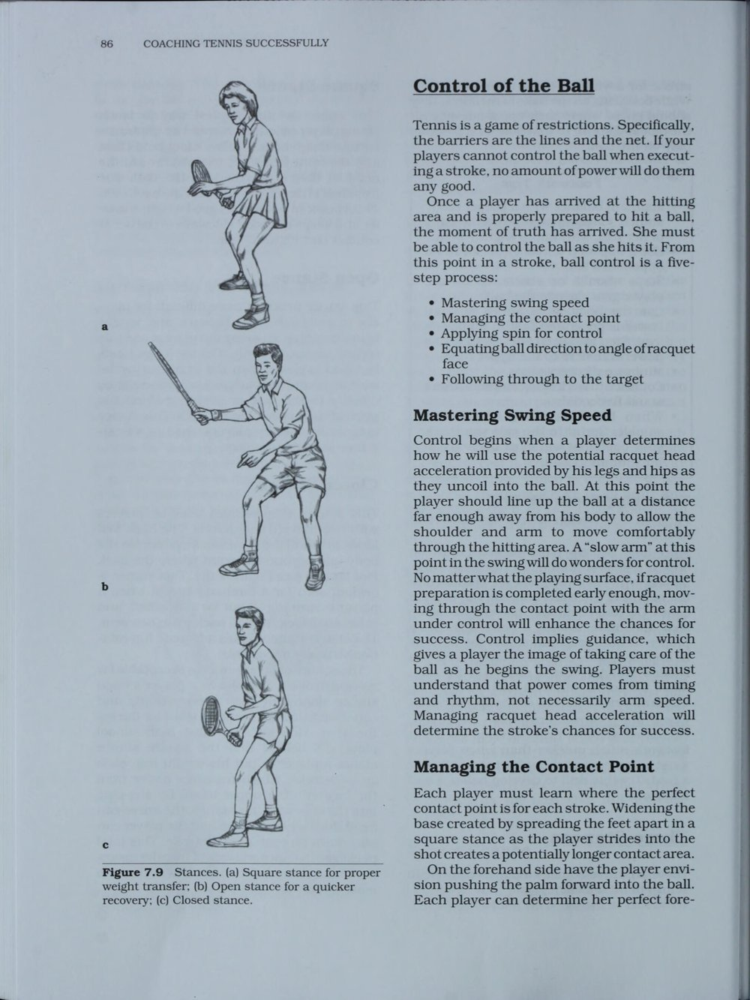
Hình 7.9: Bộ chân vuông góc (Square Stance) truyền thống và Bộ chân mở (Open Stance) hiện đại
Kỹ Thuật Cú Giao Bóng: Khởi Đầu Của Sự Chủ Động
Giao bóng là cú đánh duy nhất trong quần vợt mà bạn nắm toàn quyền kiểm soát hoàn toàn mà không bị phụ thuộc vào đường bóng của đối thủ.
Quy trình giao bóng chuẩn mực gồm 4 giai đoạn:
1. Tư thế đứng và nhịp chuẩn bị: Đứng chếch 45 độ so với vạch baseline, mắt nhìn vào ô giao bóng mục tiêu, hai tay cùng hạ xuống và cùng đưa lên nhịp nhàng.
2. Tung bóng và Tư thế Chiếc Cúp (Trophy Pose): Tay không thuận nâng bóng nhẹ nhàng bằng các đầu ngón tay như đặt một quả trứng lên không trung, điểm rơi của bóng chếch về phía trước vạch sân khoảng 30 đến 45 cm ở góc 1 giờ. Cùng lúc đó, khuỷu tay cầm vợt nâng lên ngang vai tạo thành tư thế chiếc cúp kiêu hãnh, đầu gối khuỵu sâu để tích lũy thế năng từ mặt đất.
3. Rơi đầu vợt và bật nhảy (Racquet Drop & Leg Drive): Đầu gối đạp mạnh đẩy cơ thể bật lên không trung; đầu vợt buông lỏng hoàn toàn rơi tự do xuống phía sau lưng (tạo độ trễ cơ học).
4. Tiếp xúc bóng và Úp mặt vợt (Contact & Pronation): Vươn người tiếp xúc bóng ở độ cao tối đa với cánh tay duỗi thẳng. Cẳng tay và cổ tay xoay úp từ trong ra ngoài (pronation) như một động tác quất roi uy lực, sau đó vợt quét theo quán tính sang phía hông đối diện và chân sau bước vào trong sân để giữ thăng bằng.
Cú Vô-Lê, Đập Bóng Trên Không Và Cắt Bóng
Để làm chủ khu vực trên lưới, vận động viên cần nắm vững các nguyên tắc cơ bản:
- Cú Vô-Lê (Volley): Nguyên tắc vàng là "Không Lấy Đà Sau" (No Backswing). Cú vô-lê là một động tác chặn và đấm bóng (punching action) ngắn gọn. Khóa chặt khớp cổ tay, dùng bước chân trước tiến chéo về phía bóng và dùng khối lượng toàn thân để chặn đường bay của quả bóng.
- Đập bóng trên không (Overhead Smash): Ngay khi thấy đối thủ lốp bóng, người chơi phải xoay nghiêng người ngay lập tức (Turn side-on), bước lùi bằng các Bước chân bắt chéo (crossover step), giơ tay không thuận chỉ thẳng lên quả bóng trên không để đo cự ly, và vung vợt tiếp xúc bóng ở điểm cao nhất phía trước trán như một quả giao bóng sấm sét.
- Cắt bóng trái tay (Backhand Slice): Dùng kiểu cầm Continental số 2. Hãy hình dung động tác như một cú "chặt karate" nghiêng từ trên xuống dưới và lướt ngang đáy bóng, tạo ra độ xoáy ngược (backspin) khiến bóng bay sát mép lưới và trượt là là trên mặt sân khi nảy lên.
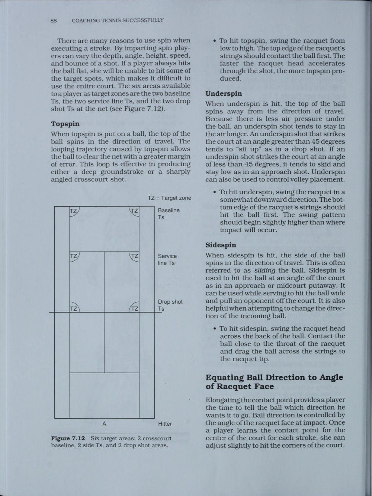
Hình 7.12: Sơ đồ 6 vùng mục tiêu chiến lược của USTA rèn luyện độ chính xác
Hệ Thống 6 Vùng Mục Tiêu (Six Target Areas) Và Các Bài Tập Rèn Luyện
Độ chính xác và tính kỷ luật về vị trí đặt bóng quan trọng gấp nhiều lần tốc độ thuần túy. USTA thiết lập hệ thống 6 vùng mục tiêu chiến lược trên sân:
- 2 Vùng cuối sân chéo góc sâu (Deep Crosscourt Target Areas): Nằm cách vạch cuối sân 1.8 mét và cách dây biên 1.8 mét. Đây là vùng đích an toàn nhất cho các pha bóng bền.
- 2 Vùng chữ T góc ngoài (Side T Areas): Điểm giao nhau giữa vạch giao bóng và dây đơn. Nơi lý tưởng cho các cú giao bóng xoáy thoát hiểm hoặc cú đánh góc ngắn mở rộng sân.
- 2 Vùng bỏ nhỏ trước lưới (Drop Shot Areas): Khu vực ngay sau lưới để dứt điểm khi đối thủ bị ép lùi quá xa.
Các bài tập kinh điển phát triển kỹ năng:
1. Bài tập Giao bóng chịu áp lực (Pressure Serving Drill): Vận động viên phải thực hiện thành công 8/10 quả giao bóng một vào các góc nón mục tiêu dưới hình phạt chống đẩy nếu đánh trượt.
2. Bài tập Đánh bóng hình số 8 (Figure 8 Drill): Một người luôn đánh dọc dây, người kia luôn đánh chéo sân. Giúp cả hai tay vợt rèn luyện khả năng kiểm soát hướng đi của bóng và rèn luyện thể lực di chuyển liên tục.
3. Bài tập Vô-lê Điểm 10 Hoàn Hảo (Perfect 10 Net Drill): Hai người đứng lưới phải giữ loạt vô-lê bóng nảy trên không liên tục đạt mốc 10 lần chạm mà không để bóng rơi chạm đất, rèn phản xạ và cảm giác cổ tay êm ái.
Chương 8: Chiến Thuật Thi Đấu Đơn
Singles Strategy and Court Geometry
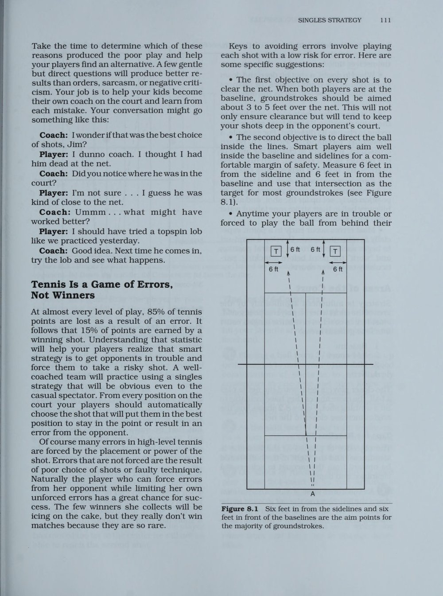
Hình 8.1: Nguyên tắc biên độ an toàn - Ngắm bóng cách vạch biên và vạch cuối sân 1.8 mét (6 feet)
Triết Lý Xác Suất Thống Kê Trong Quần Vợt Đơn (Playing the Percentages)
Nhiều vận động viên trẻ lầm tưởng rằng một trận quần vợt đỉnh cao được quyết định bởi những cú đánh thắng điểm ngoạn mục (winners) xé toạc góc sân. Tuy nhiên, các số liệu thống kê phân tích của USTA chỉ ra một sự thật kinh ngạc: Trong hơn 80% các pha bóng ở cấp độ học đường và nghiệp dư, điểm số kết thúc bằng một lỗi đánh bóng hỏng (tự đánh hỏng hoặc bị ép đánh hỏng), chứ không phải do một cú winner hoàn hảo.
Tay vợt giành chiến thắng trong quần vợt không phải là người tung ra nhiều cú đánh mạo hiểm nhất, mà là người mắc ít lỗi tự đánh hỏng hơn đối phương. Chơi quần vợt theo tỷ lệ xác suất đòi hỏi vận động viên phải tuân thủ nghiêm ngặt ba quy tắc an toàn:
1. Độ cao an toàn qua lưới (Net clearance): Luôn đánh bóng với quỹ đạo cách mép lưới từ 60 cm đến 1 mét, sử dụng độ xoáy cuộn (topspin) để ép bóng cắm vào sân thay vì đánh sát sạt mép băng lưới.
2. Biên độ an toàn với vạch sân (Margin of error): Nhắm mục tiêu vào khu vực cách các vạch biên và vạch cuối sân 1.8 mét (6 feet). Việc nhắm sát vạch kẻ sân chỉ làm tăng rủi ro đánh bóng ra ngoài lên gấp 5 lần mà không mang lại thêm nhiều lợi thế chiến thuật.
3. Ưu tiên đường bóng chéo sân (Crosscourt preference): Lưới ở khu vực trung tâm thấp hơn 15 cm so với hai bên cột lưới, và đường chéo sân dài hơn đường thẳng dọc dây gần 2 mét. Đánh bóng chéo sân cho phép bạn đánh với tốc độ cao hơn mà bóng vẫn nằm gọn trong sân.
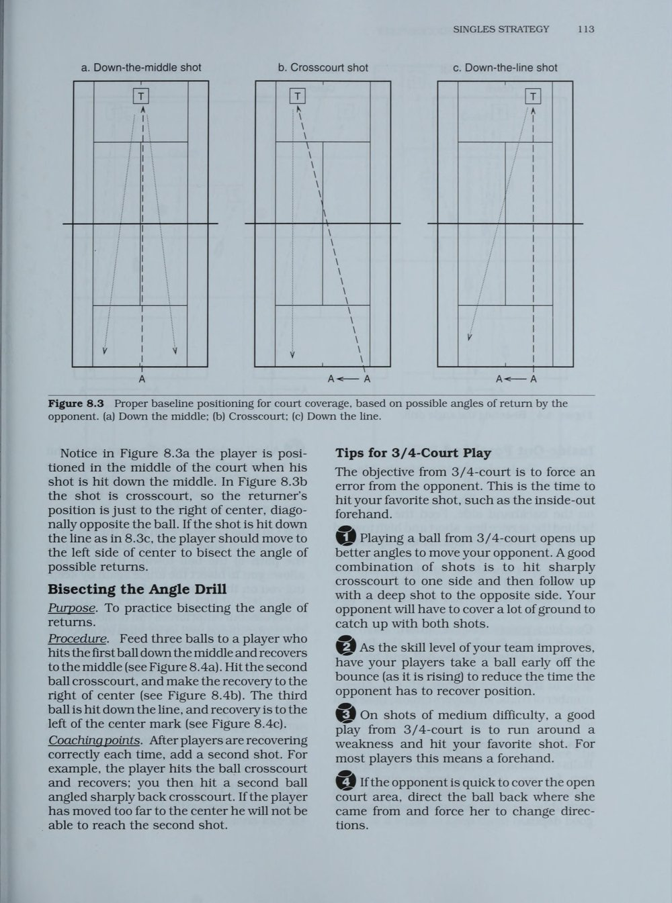
Hình 8.3: Vị trí hồi vị tối ưu dựa trên đường phân giác của các góc đánh trả có thể xảy ra
Hình Học Sân Đấu Và Nguyên Tắc Đường Phân Giác (Bisecting the Angle)
Một trong những sai lầm phổ biến nhất của các tay vợt là sau khi tung ra cú đánh, họ lập tức chạy về điểm đánh dấu chính giữa vạch cuối sân (center mark). Trong thực tế chiến thuật, điểm hồi vị tối ưu không phải là điểm giữa sân, mà là đường phân giác của góc các đường bóng mà đối thủ có thể đánh trả (Bisecting the Angle of Return).
Khi bạn ép đối thủ dạt sang góc xa bên tay trái của họ:
- Đường bóng đối thủ đánh thẳng dọc dây sẽ đi dọc theo vạch biên bên tay phải của bạn.
- Đường bóng đối thủ đánh chéo sân góc rộng sẽ đi chéo sang góc bên tay trái của bạn.
- Vì góc mở của đường chéo sân rộng hơn nhiều so với đường thẳng, nên nếu bạn đứng ở chính giữa sân, bạn sẽ để hở một khoảng trống mênh mông bên phía chéo sân. Để che chắn sân đấu hiệu quả nhất, bạn phải di chuyển lệch sang phía đối diện với vị trí của đối thủ khoảng 1 mét, đứng ngay trên đường phân giác của góc đánh trả. Điều này giúp quãng đường di chuyển sang cả hai bên cánh là hoàn toàn cân bằng.
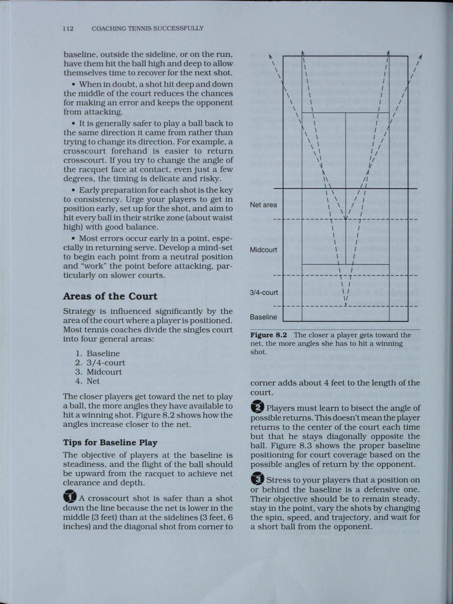
Hình 8.2: Càng tiến gần lưới, góc mở sân đấu và cơ hội dứt điểm winner càng nhân rộng
Bốn Phong Cách Thi Đấu Đơn Kinh Điển
Huấn luyện viên cần quan sát tố chất thể lực và tâm lý của từng học trò để định hình phong cách thi đấu phù hợp nhất, thay vì ép buộc tất cả vận động viên phải chơi theo một khuôn mẫu:
1. Tay vợt tấn công cuối sân (Aggressive Baseliner): Sở hữu vũ khí sở trường là cú thuận tay uy lực hoặc quả giao bóng sấm sét. Họ kiểm soát trận đấu từ vạch baseline bằng tốc độ bóng cao, chủ động ép đối thủ di chuyển liên tục và dứt điểm ngay khi có bóng ngắn.
2. Tay vợt phản công bền bỉ (Counterpuncher / Retriever): Nổi bật với thể lực phi thường, tốc độ di chuyển linh hoạt và độ kiên nhẫn vô hạn. Họ hiếm khi tự đánh hỏng, luôn trả được thêm một quả bóng qua sân và khai thác triệt để sự nóng vội, ức chế tâm lý của đối thủ.
3. Tay vợt giao bóng lên lưới (Serve-and-Volleyer): Sử dụng quả giao bóng biến hóa kết hợp việc lập tức lao lên chiếm lĩnh vị trí trên lưới để kết liễu điểm số bằng cú vô-lê dứt khoát. Phong cách này gây áp lực thời gian cực lớn lên đối thủ và rút ngắn thời lượng của mỗi pha bóng.
4. Tay vợt toàn diện (All-Court Player): Có kỹ năng hoàn hảo ở mọi vị trí trên sân, từ cuối sân đến khu vực trên lưới. Họ có khả năng đọc trận đấu xuất sắc và linh hoạt thay đổi chiến thuật tùy theo điểm yếu của từng đối thủ cụ thể.
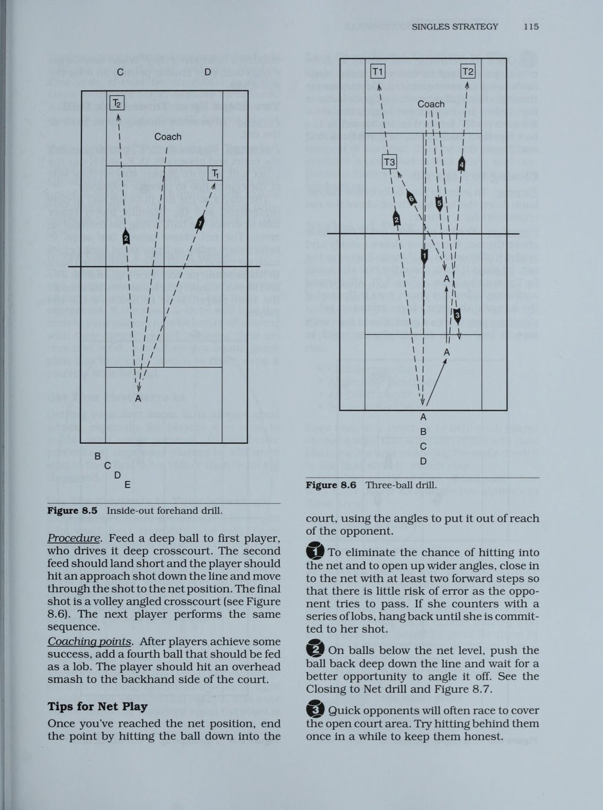
Hình 8.5: Sơ đồ bài tập né trái đánh phải dứt điểm (Inside-Out Forehand Drill)
Các Bài Tập Chiến Thuật Đơn Đặc Trưng (Pattern Play)
Chiến thuật thi đấu cần được tự động hóa thông qua các bài tập lặp lại tình huống thực tế:
- Bài tập Né Trái Đánh Phải (Inside-Out Forehand Drill): Vận động viên di chuyển vòng qua góc trái tay để tung ra cú thuận tay chéo góc sâu ép vào điểm yếu trái tay của đối thủ, sau đó bước chân vào sân dứt điểm quả bóng ngắn tiếp theo sang góc đối diện (Inside-In).
- Bài tập Ba Quả Bóng Quyết Định (Three-Ball Drill): Quả 1: Đánh sâu chéo sân từ vạch baseline; Quả 2: Di chuyển tiến lên thực hiện cú đánh tiếp cận (approach shot) dọc dây; Quả 3: Lao lên lưới thực hiện cú vô-lê góc ngắn chéo sân kết liễu điểm số.
- Bài tập Trừng Phạt Giao Bóng Yếu (Punish Weak Serves): Khi đối thủ giao bóng hai non và lơ lửng, người trả giao bóng phải bước vào trong sân ít nhất 1 mét, tấn công quyết đoán vào góc yếu của đối thủ để giành quyền kiểm soát ngay lập tức.
Chương 9: Chiến Thuật Thi Đấu Đôi
Doubles Strategy and Formations
Triết Lý Đánh Đôi Hiện Đại: Bức Tường Di Động Trên Lưới
Đánh đôi không phải là trận đánh đơn được diễn ra trên một mặt sân rộng hơn, mà là một môn thể thao hoàn toàn khác biệt với những quy luật chiến thuật riêng biệt. Trong khi đánh đơn là cuộc đấu sức bền và khả năng chịu đựng cuối sân, thì đánh đôi là trò chơi của góc đánh, phản xạ chớp nhoáng và sự đồng bộ tuyệt đối giữa hai người đồng đội.
Nguyên lý cốt lõi của đánh đôi là: "Chiếm Lĩnh Khu Vực Lưới Bằng Cả Hai Người" (The Wall Concept). Đội bóng nào đưa được cả hai thành viên lên áp sát mép lưới trước sẽ nắm giữ hơn 80% cơ hội thắng điểm số đó. Khi hai người đứng trên lưới, họ tạo thành một bức tường thép di động che chắn toàn bộ góc sân và có thể đập bóng dứt điểm xuống bất kỳ khoảng trống nào dưới chân đối thủ.
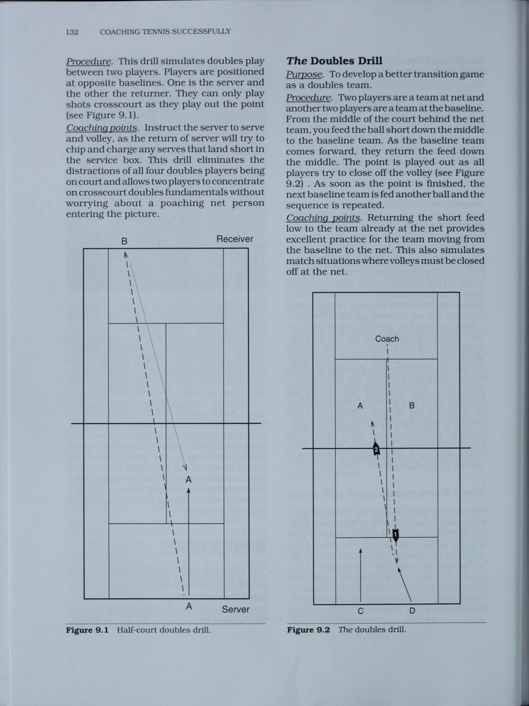
Hình 9.1: Bài tập nửa sân đôi (Half-Court Doubles Drill) rèn luyện độ chính xác và phản xạ trên lưới
Bốn Đội Hình Chiến Thuật Cơ Bản Trong Đánh Đôi
Một đội đôi xuất sắc phải làm chủ và biến hóa linh hoạt giữa các sơ đồ đội hình:
1. Đội hình truyền thống (Traditional - One Up, One Back): Một người đứng ở vạch baseline kiểm soát bóng bền, người kia đứng trên lưới sẵn sàng cắt bóng. Đây là đội hình khởi đầu cơ bản, nhưng cần nhanh chóng chuyển tiếp người cuối sân lên lưới ngay khi có cơ hội.
2. Đội hình hai người trên lưới (Both-At-Net): Đội hình tấn công nguy hiểm nhất. Hai người di chuyển song song như được nối với nhau bằng một sợi dây thừng dài 3 mét: Khi bóng sang trái cả hai cùng nghiêng sang trái, khi bóng sang phải cả hai cùng trượt sang phải, luôn bảo vệ chặt chẽ khoảng trống chữ T trung lộ.
3. Đội hình Úc (Australian Formation): Người đứng lưới cùng phía sân với người giao bóng (đứng sát vạch chữ T). Chiến thuật này triệt tiêu hoàn toàn cú trả bóng chéo sân sở trường của đối thủ, ép họ phải trả bóng dọc dây vào vị trí người giao bóng đang lao lên bắt bài.
4. Đội hình Chữ I (I-Formation): Người đứng lưới ngồi xổm ngay trên vạch chữ T trung tâm để không che tầm nhìn của người giao bóng. Trước khi giao bóng, người đứng lưới dùng ngón tay ra dấu sau lưng (bên trái hoặc bên phải) để quy định hướng mình sẽ bật dậy cắt bóng, tạo sự bất ngờ tuyệt đối cho đối thủ.
Kỹ Thuật Cắt Chặn Bắt Bài Trên Lưới (Poaching)
Cắt chặn (Poaching) là vũ khí sát thương số một của người đứng lưới. Một người đứng lưới bị động chỉ đứng nhìn bóng bay qua đầu là một "người thừa" trên sân.
Để thực hiện một pha poach hoàn hảo:
- Thời điểm xuất phát: Không được di chuyển quá sớm (đối thủ sẽ nhìn thấy và đổi hướng dọc dây), cũng không di chuyển quá muộn. Thời điểm vàng là ngay khi người trả giao bóng bắt đầu động tác vung vợt về phía trước (forward swing) - lúc này mắt của họ đã dán chặt vào bóng và không thể đổi hướng đánh.
- Góc di chuyển: Không chạy ngang song song với lưới. Hãy lao chéo về phía trước theo góc 45 độ áp sát mép lưới để đón bóng ở tầm cao nhất và đấm quả vô-lê chéo sân cắm thẳng xuống chân người đứng lưới đối phương.
Kỹ Thuật Trả Giao Bóng Và Giao Tiếp Đồng Đội Trong Đánh Đôi
Trong đánh đôi, nhiệm vụ của người trả giao bóng không phải là tung ra cú winner giật gân, mà là đánh một quả bóng chéo sân thật thấp, khiến bóng chìm sâu dưới tầm thắt lưng của người giao bóng đang lao lên lưới. Quả bóng chìm này sẽ ép đối thủ phải vớt bóng từ dưới lên (half-volley), tạo cơ hội ngàn vàng cho người đồng đội đứng lưới của bạn nhảy vào dứt điểm.
Giao tiếp là chất keo gắn kết đội hình:
- Hãy nói chuyện và đập tay sau mỗi điểm số, bất kể điểm đó thắng hay thua.
- Thống nhất các khẩu lệnh dứt khoát trên sân: "Của tôi!" (Mine), "Của bạn!" (Yours), "Đổi sân!" (Switch), "Bỏ!" (Bounce/Out).
- Tuyệt đối không bao giờ tỏ thái độ chán nản hay chỉ trích khi đồng đội mắc sai lầm, bởi vì sự ngờ vực lẫn nhau là cách nhanh nhất để dâng chiến thắng cho đối thủ.
PHẦN IV: ĐIỀU HÀNH TRẬN ĐẤU (COACHING MATCHES)
Chương 10: Chuẩn Bị Toàn Diện Trước Trận Đấu
Preparing for Matches
Xây Dựng Kế Hoạch Tác Chiến (The Match Game Plan)
Sau nhiều tuần tập luyện chuyên cần về kỹ thuật, thể lực và tâm lý, giai đoạn chuẩn bị cho trận đấu chính là lúc huấn luyện viên giúp từng vận động viên xây dựng một "Kế Hoạch Tác Chiến" (Game Plan) cụ thể và sắc bén. Kế hoạch này được kiến tạo dựa trên ba trụ cột:
1. Nền tảng triết lý quần vợt xác suất (chơi bóng an toàn, kỷ luật cao).
2. Phát huy tối đa vũ khí mạnh nhất của bản thân vận động viên và bảo vệ điểm yếu.
3. Báo cáo trinh sát chi tiết về phong cách và thói quen của đối thủ.
Khi vận động viên bước vào sân với một bức tranh chiến thuật rõ ràng trong tâm trí, mức độ lo âu và căng thẳng thần kinh sẽ tự động giảm đi một nửa. Họ không còn rơi vào trạng thái hoang mang tự hỏi "Mình phải làm gì bây giờ?", mà chỉ cần tập trung thực thi từng phương án đã được chuẩn bị chu đáo.
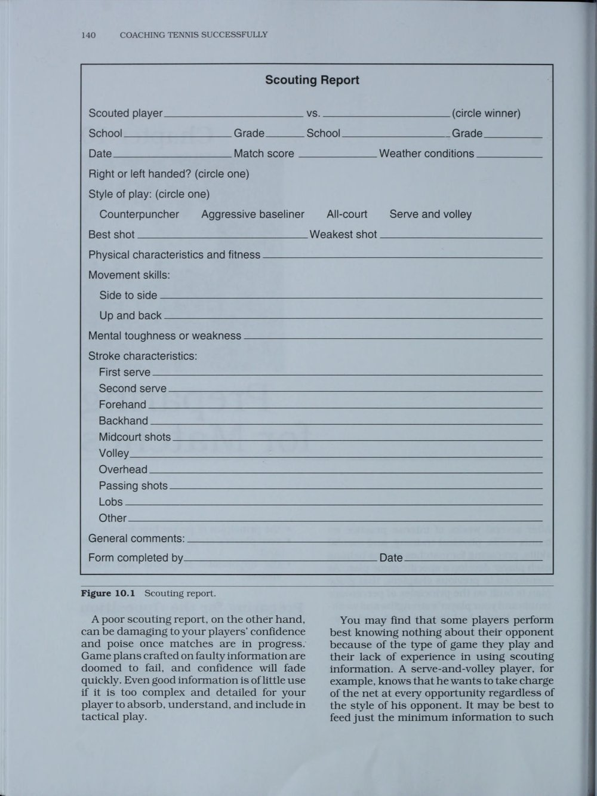
Hình 10.1: Biểu mẫu báo cáo trinh sát đối thủ (Scouting Report Form) chính thức của USTA
Báo Cáo Trinh Sát Đối Thủ (The Scouting Report)
Một bản báo cáo trinh sát chất lượng cao có thể tạo nên sự khác biệt giữa một chiến thắng thuyết phục và một thất bại đáng tiếc. Huấn luyện viên hoặc các trợ lý cần quan sát đối thủ trong các trận đấu trước đó và ghi nhận các yếu tố cốt tử:
- Kiểu giao bóng: Họ thường giao bóng một vào góc chữ T hay góc chữ A góc rộng? Quả giao bóng hai nảy thấp hay nảy xoáy cao? Họ có dễ mắc lỗi giao bóng kép khi chịu áp lực điểm bẻ giao bóng (break point) không?
- Điểm yếu cuối sân: Cú thuận tay hay trái tay của họ kém ổn định hơn? Khi bị ép di chuyển sang hai biên, họ thường đánh bóng trả lại chéo sân hay liều lĩnh đánh dọc dây?
- Phản xạ trên lưới: Họ có thoải mái khi phải lên lưới không, hay thường lúng túng trước những cú lốp bóng bổng và những quả bóng bắn thẳng vào người?
- Tâm lý thi đấu: Họ phản ứng thế nào khi gặp bất lợi về tỷ số hoặc khi bị trọng tài bắt lỗi? Họ có dễ nổi nóng và mất kiên nhẫn khi phải đánh những loạt bóng bền kéo dài trên 10 lần chạm không?
Quy Trình Khởi Động, Dinh Dưỡng Và Bù Nước Chuyên Nghiệp
Sự chuẩn bị thể chất trước giờ thi đấu phải được thực hiện một cách bài bản:
- Dinh dưỡng trước trận: Vận động viên nên dùng bữa ăn giàu carbohydrate phức hợp (yến mạch, cơm gạo lứt, chuối, bánh mì nguyên cám) khoảng 3 đến 4 tiếng trước giờ thi đấu để tích trữ glycogen trong gan và cơ bắp. Tránh các thực phẩm nhiều chất béo và đường đơn vì chúng gây đầy bụng và tụt đường huyết đột ngột.
- Quy trình bù nước (Hydration protocol): Uống khoảng 500 ml nước lọc hoặc dung dịch điện giải 2 tiếng trước trận. Trong suốt trận đấu, cứ sau mỗi lần đổi sân, vận động viên phải uống từ 4 đến 8 ngụm nước điện giải để bù đắp lượng muối khoáng thất thoát qua mồ hôi.
- Khởi động 30 phút trước trận: Bắt đầu bằng 10 phút vận động làm ấm cơ thể và giãn cơ động ngoài sân, tiếp theo là 15 phút đánh bóng khởi động trên sân (từ bóng ngắn, bóng dài cuối sân, vô-lê, smash đến giao bóng), và kết thúc bằng 5 phút tĩnh tâm hít thở sâu.
Chương 11: Chỉ Đạo & Quản Lý Trận Đấu
Handling Match Play
Quy Định Chỉ Đạo Và Vai Trò Của Huấn Luyện Viên Trên Sân
Giờ phút thi đấu chính thức là đỉnh cao của mọi nỗ lực mà cả đội tuyển đã dày công chuẩn bị. Trong hệ thống thi đấu trung học và đại học, huấn luyện viên được phép tiếp cận và đưa ra lời chỉ dẫn cho học trò trong 90 giây đổi sân (changeover) hoặc khoảng thời gian nghỉ giữa các set đấu.
Thái độ và phong thái của huấn luyện viên có sức lan tỏa mãnh liệt tới tâm lý vận động viên:
- Hãy luôn giữ nét mặt điềm tĩnh, tự tin và vững vàng. Nếu huấn luyện viên biểu lộ sự bực bội, hoảng hốt hay thất vọng, vận động viên trên sân sẽ lập tức đánh mất sự an tâm và suy sụp tinh thần.
- Giữ lời khuyên thật ngắn gọn và súc tích (Quy tắc 1 hoặc 2 điểm cốt lõi): Đừng làm học trò rối trí với một bài thuyết trình dài dòng. Hãy đưa ra chỉ dẫn hành động rõ ràng, ví dụ: "Em đang nôn nóng dứt điểm quá sớm; hãy nhắm bóng cao hơn mép lưới 1 mét vào sâu góc trái tay của bạn ấy và kiên nhẫn chờ quả bóng ngắn".
Quản Lý Đà Tâm Lý (Momentum) Và Vượt Qua Nghịch Cảnh
Quần vợt là trò chơi của những con sóng tâm lý (momentum shifts). Khi đang trên đà thắng lợi, mọi cú đánh dường như đều trúng đích; nhưng khi đánh mất đà tâm lý, một tay vợt có thể thua liền 4 hoặc 5 game chỉ trong chớp mắt.
Huấn luyện viên cần hướng dẫn học trò cách điều khiển nhịp độ:
- Khi đang thắng thế: Giữ nguyên nhịp điệu thi đấu, không chủ quan thay đổi chiến thuật đang phát huy hiệu quả, tập trung tối đa để dứt điểm set đấu.
- Khi đối thủ vùng lên hoặc bản thân rơi vào khủng hoảng: Hãy chủ động làm chậm nhịp độ trận đấu một cách hợp lệ. Sử dụng trọn vẹn 20 giây cho phép giữa các điểm số, đi ra lau mồ hôi bằng khăn, kiểm tra lại dây vợt, hít thở sâu 3 nhịp để nhịp tim hạ xuống và thiết lập lại sự bình tĩnh trước khi thực hiện quả giao bóng tiếp theo.
Tinh Thần Thể Thao, Bắt Bóng Trung Thực Và Sức Mạnh Đồng Đội
Trong quần vợt học đường, phần lớn các trận đấu diễn ra theo thể thức tự bắt bóng (The Code). Sự trung thực và lòng tự trọng phải luôn được đặt lên trên hết. Dạy học trò nguyên tắc: "Nếu bóng chạm mép ngoài cùng của vạch vôi dù chỉ 1 milimet, bóng vẫn hoàn toàn trong sân; nếu không chắc chắn 100%, điểm số đó thuộc về đối thủ".
Khi một trận đấu cá nhân kết thúc sớm, trách nhiệm của vận động viên đó chưa hề dừng lại. Họ phải ngay lập tức cất vợt, mặc áo ấm và di chuyển sang các sân bên cạnh để cổ vũ nhiệt thành cho các đồng đội còn đang thi đấu. Đội tuyển quần vợt là một gia đình đoàn kết: Toàn đội cùng thắng và cùng chia sẻ trách nhiệm khi thất bại.
PHẦN V: ĐÁNH GIÁ VÀ HOÀN THIỆN (COACHING EVALUATION)
Chương 12: Đánh Giá Hiệu Suất Vận Động Viên
Evaluating Your Players' Performance
Ghi Chép Thống Kê Trận Đấu Khách Quan (Match Charting)
Trí nhớ con người thường bị bóp méo bởi cảm xúc sau trận đấu. Người thắng cuộc có xu hướng nghĩ rằng mình đã chơi một trận đấu hoàn hảo, trong khi người thua cuộc thường chìm đắm trong cảm giác tồi tệ rằng mình đã đánh hỏng mọi quả bóng.
Để có được cái nhìn trung thực và khoa học, huấn luyện viên cần tổ chức ghi chép biểu đồ trận đấu (Match Charting) với các chỉ số cốt lõi:
- Tỷ lệ giao bóng một vào sân (Mục tiêu chuẩn mực: 60% đến 70%).
- Tỷ lệ ghi điểm khi giao bóng một và giao bóng hai.
- Số lượng lỗi tự đánh hỏng (Unforced Errors) so với số điểm thắng trực tiếp (Winners).
- Tỷ lệ tận dụng cơ hội bẻ giao bóng (Break Points Converted).
- Tỷ lệ thắng điểm khi lên lưới.
Những con số thống kê lạnh lùng này sẽ giúp huấn luyện viên và vận động viên nhìn thấy chính xác nguyên nhân dẫn đến kết quả trận đấu, từ đó thiết kế giáo án tập luyện khắc phục đúng trọng tâm thay vì phỏng đoán mò mẫm.
Quy Trình Rút Kinh Nghiệm Sau Trận Đấu (Post-Match Debriefing)
Thời điểm rút kinh nghiệm đóng vai trò sống còn:
- Tuyệt đối không tổ chức mổ xẻ trận đấu gay gắt ngay khi vận động viên vừa bước ra khỏi sân sau một thất bại đau đớn. Nồng độ adrenaline và cảm xúc tiêu cực lúc đó sẽ khiến học trò chỉ biết phòng thủ tâm lý hoặc rơi vào tự ti cùng cực.
- Hãy cho vận động viên thời gian 20 đến 30 phút để thả lỏng cơ bắp, tắm rửa, uống nước và lấy lại sự bình tâm.
- Buổi nói chuyện cần bắt đầu bằng việc công nhận những nỗ lực thi đấu ngoan cường, sau đó cùng nhau phân tích các dữ liệu thống kê một cách khách quan, và kết thúc bằng việc thống nhất một kế hoạch hành động cụ thể cho các buổi tập tiếp theo.
Chương 13: Đánh Giá Toàn Diện Chương Trình & Tự Hoàn Thiện
Evaluating Your Program and Professional Growth
Tổng Kết Mùa Giải Toàn Diện (Postseason Program Review)
Khi trái bóng cuối cùng của mùa giải ngừng lăn, công việc của một huấn luyện viên chuyên nghiệp không hề kết thúc mà chỉ chuyển sang một giai đoạn mới: Đánh giá và kiến tạo cho mùa giải tiếp theo.
Huấn luyện viên cần tiến hành tổng kết trên 4 khía cạnh:
1. Đánh giá sự tiến bộ của từng cá nhân vận động viên so với mục tiêu đầu mùa.
2. Kiểm tra thành tích học tập và sự phát triển phẩm chất đạo đức của toàn đội.
3. Thu thập ý kiến phản hồi mang tính xây dựng từ vận động viên, phụ huynh và ban giám hiệu nhà trường thông qua các phiếu khảo sát kín.
4. Kiểm kê trang thiết bị, máy bắn bóng, lưới sân, lập dự toán ngân sách và đề xuất nâng cấp cơ sở vật chất với ban giám đốc thể thao.
Hành Trình Tự Đào Tạo Suốt Đời Của Người Thầy
Môn quần vợt không ngừng tiến hóa về công nghệ vợt, dây đan, khoa học thể chất và phương pháp luận chiến thuật. Một huấn luyện viên ngừng học hỏi là một huấn luyện viên đang thụt lùi.
Hãy chủ động tham gia các khóa đào tạo nâng cao của USTA, Hiệp hội Huấn luyện viên Quần vợt Chuyên nghiệp Hoa Kỳ (USPTA) hoặc Tổ chức Đăng kiểm Quần vợt Chuyên nghiệp (PTR). Hãy đọc thêm các sách chuyên khảo về tâm lý học thể thao, cơ sinh học vận động và không ngừng giao lưu, học hỏi từ các đồng nghiệp giàu kinh nghiệm. Người thầy vĩ đại nhất luôn là người giữ được tâm thế khiêm nhường của một học trò trọn đời.
CÁC PHỤ LỤC CHUYÊN SÂU (APPENDICES)
Phụ Lục A: Huấn Luyện Ngoài Mùa Giải Cho Các Giải Đấu Cá Nhân
Off-Season Training for Tournament Play
Giai đoạn ngoài mùa giải (Off-season) là thời điểm vàng để các vận động viên tạo nên bước nhảy vọt về đẳng cấp. Khi không còn áp lực thi đấu điểm số cho đội tuyển học đường, vận động viên có thể thoải mái tái cấu trúc các cú đánh, sửa đổi cách cầm vợt hoặc nâng cấp quả giao bóng mà không sợ ảnh hưởng đến thành tích chung.
Huấn luyện viên cần khuyến khích học trò tham gia vào hệ thống các giải đấu trẻ cá nhân của USTA trong mùa hè để tích lũy điểm xếp hạng và cọ xát với các đấu thủ đa dạng từ nhiều vùng miền khác nhau. Đồng thời, đây cũng là giai đoạn tối ưu để xây dựng lại nền tảng thể lực và tăng cường khối lượng cơ bắp.
Phụ Lục B: Các Bài Tập Phát Triển Thể Lực & Sức Mạnh Chuyên Sâu
Tennis-Specific Strength and Conditioning Exercises
Chương trình rèn luyện sức mạnh chuyên biệt cho quần vợt tập trung vào sự cân bằng cơ bắp và bảo vệ các khớp chịu tải trọng cao:
1. Tăng cường nhóm cơ chóp xoay vai (Rotator Cuff Exercises): Sử dụng dây kháng lực (resistance bands) để thực hiện các bài tập xoay trong (internal rotation) và xoay ngoài (external rotation) cho khớp vai, ngăn ngừa hội chứng va chạm khớp vai và rách gân chóp xoay.
2. Củng cố cẳng tay và cổ tay (Forearm & Wrist Curls): Thực hiện các bài tập gập và duỗi cổ tay với tạ đơn nhẹ (1 đến 2 kg) để tăng cường sức mạnh bám giữ cán vợt và phòng chống viêm lồi cầu ngoài xương cánh tay (tennis elbow).
3. Sức mạnh bùng nổ thân dưới (Lower Body Explosiveness): Các bài tập chùng chân (lunges), bật nhảy đa hướng (multi-directional bounds) và nhảy bục (plyometric box jumps) giúp tối ưu hóa khả năng bật nhả lò xo từ mặt đất vào cú giao bóng và những pha cứu bóng ở góc sân.